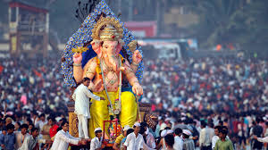

Ganesh Chaturthi:
Ganesh Chaturthi (Ganesa Chaturthi), also known as Vinayaka Chaturthi (Vinayaka Chaturthi) or Vinayaka Chavithi (Vinayaka Chavithi) is a Hindu festival celebrating the birth of Ganesha.
A ten-day festival, it starts on the fourth day of Hindu Lunisolar calendar month Bhadrapada, which typically falls in the months of August or September of the Gregorian calendar.
The festival is marked with the installation of Ganesha
clay idols privately in homes, or publicly on elaborate pandals (temporary stages).